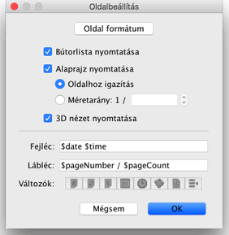
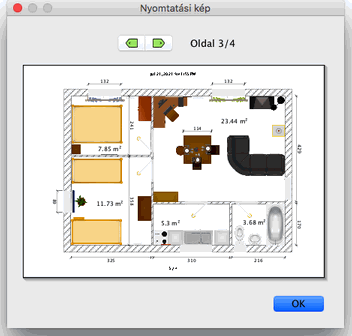

|
|
Otthon kinyomtat�sa | ||
|
Otthon kinyomtat�s�hoz v�lassza a F�jl > nyomtat�s men�t.
A Sweet Home 3D alapbe�ll�t�sok szerint kinyomtatja a b�torlist�t, az alaprajzot, �s
az aktu�lis h�romdimenzi�s n�zetet, az alap�rtelmezett pap�rm�retet, marg�kat �s
t�jol�st haszn�lva.  Az Oldalbe�ll�t�s panelen megv�ltoztathatja a pap�rm�retet �s a t�jol�st az Oldal form�tum gombra kattint�ssal. Azt is kiv�laszthatja, hogy a b�torlista, az alaprajz, �s a 3D n�zet kinyomtat�djon-e. Ha nem szeretn�, hogy a program az alaprajz m�retar�ny�t automatikusan az oldalhoz igaz�tsa, megadhat m�s m�retar�nyt.Megadhat fejl�cet �s l�bl�cet is, melyek minden kinyomtatott oldal alj�n �s tetej�n megjelennek. A Fejl�c �s L�bl�c mez�kbe �rhat sz�veget �s van lehet�s�g v�ltoz�k megad�s�ra is, melyek hely�re a v�ltoz�k �rt�ke fog nyomtat�dni. Jelenleg az al�bbi 7 v�ltoz�t haszn�lhatja:
A nyomtat�si k�p megtekint�s�hez v�lassza a F�jl > Nyomtat�si k�p men�pontot.  Az el�n�zeti k�pen l�thatja mi ker�l az egyes oldalakon kinyomtat�sra. A lapok k�z�tt a lap tetej�n tal�lhat� nyilakra kattint�ssal vagy a kurzornyilakkal v�lthat. |
|